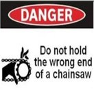

Litigious Environment
A national legal ad campaign in recent years featured two plaintiffs’ attorneys huddled over a table deciding which liability case to pursue. One of the lawyers commented that “the defendant has assets, so let’s proceed.”
For a defendant with no assets, the statement could have been “the defendant has no significant assets, so let’s not bother.”
No one wants to become poor to avoid liability claims. Yet what if your clients could insulate their wealth? Insulating wealth is hardly a new concept and has been practiced for millennia.
The ancient Egyptians built pyramids some 4,500 years ago to protect a Pharaoh’s fortune (and body) from looters. Grave robbing is probably not one of your greatest concerns, yet in our current litigious environment, you and your clients may need pyramid-like security to protect wealth.
Click on each of the following contributing factors to a litigious legal environment to learn more.
This legal evolution could be called the “if I can dream of a way to make more people liable, I’ll go after them in court” approach. Those dreams can turn to nightmares when the quest for deep pockets lands your client squarely in the crosshairs of a lawsuit. An example follows.
Example
Assume a CPA ran a stop sign in a wealthy residential neighborhood one night, crashed into another car, and caused injuries to the other driver. Further assume that the CPA had very little auto liability insurance, was retiring from a declining practice, and had limited net worth.
Not too many decades ago, it was unlikely that an attorney for the plaintiff would sue third parties for the defendant CPA’s actions.
However, welcome to expanding theories of legal liability! The plaintiff’s attorney could very well target third parties such as those listed below, depending upon the facts and circumstances of the accident:
A homeowner who allowed shrubbery to even partially block the view of the stop sign or whose nighttime security lights were distracting to drivers
The manufacturer of the stop sign for insufficient reflective material in the sign
The city for failure to 1) maintain the sign properly, 2) replace it according to the manufacturer’s recommendation, or 3) place it in an optimum position
The manufacturer of the car the CPA was driving (the allegation may be reduced visibility at some angles)
The CPA’s employer for hosting a party where alcohol was served to the CPA
And by the way, many of the potential targets just listed could be you, a family member, or your best client.
The Seventh Amendment to the U.S. Constitution guarantees a right to jury trial in certain federal civil cases, such as liability claims, but does not guarantee the right to trial by a jury of one’s peers.
Only criminal defendants have the right to trial by jury of their peers (under a separate Amendment).
In addition, the Seventh Amendment is binding only upon certain federal cases.
While the individual states are not always required to follow the imperatives of the Seventh Amendment, a number of state courts do indeed make the jury trial a part of certain state civil liability cases.
How likely is your high net worth client to receive a civil trial by a jury of peers?
Assume that your client, with a net worth of $5,000,000, is on trial for a massive liability claim.
As your client looks upon the jurors who will decide his fate, he will likely see a group with a median net worth of about $45,000.1
Different studies have either confirmed or failed to confirm jury bias against wealthy defendants. However, be aware that a Director of the American Bar Association expressed concerns about anti-wealth bias in juries. The National Law Journal (1993) quotes the Director as follows: “[with regard to anti wealthy bias] The only answer I wouldn’t believe is one that says they [the jury] didn’t take defendant wealth into account...”
Bottom line - Your client may not even have an unbiased jury, much less one comprised of peers.
1Luhbey, Tami. America’s Middle Class, Poorer Than You Think. June 11, 2014. http://money.cnn.com/2014/06/11/news/economy/middle-class-wealth
 We live in the land of the free, home of the brave, and origin of sublimely ridiculous warning labels.
This warning label testifies starkly to the risk of frivolous lawsuit in the United States.
As yet another example, jet skis now include a warning label which states “Do not use lighted match to check fuel level.” Why should the Darwinian act of using a lighted match to check the level of gasoline in a jet ski’s gas tank create liability for the jet ski manufacturer?
The answer is simple - because in these United States of America you have the right to sue virtually anyone and virtually anyone has the right to sue you.
But theoretically, that should not be a great concern because if you are not at fault you need only prove that, right?
Sadly, the cost of proving oneself right can easily cause extreme stress and cost six figures in legal fees alone.
The following cases illustrate largely blameless defendants being subjected to unjust wasted time, emotional stress, and legal cost in proving themselves right. This very brief list is merely the tip of the frivolous lawsuit iceberg:
Political Disclaimer
The debate over frivolous litigation and tort reform rages in our country. This course is not intended to advance either side of that national debate. We respect and appreciate that litigation is frequently used to redress terrible wrongs. Our point in this discussion is merely to demonstrate your client’s vulnerability to the misuse of liability litigation.